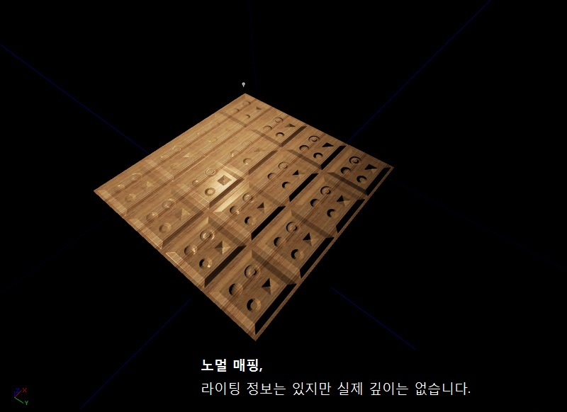
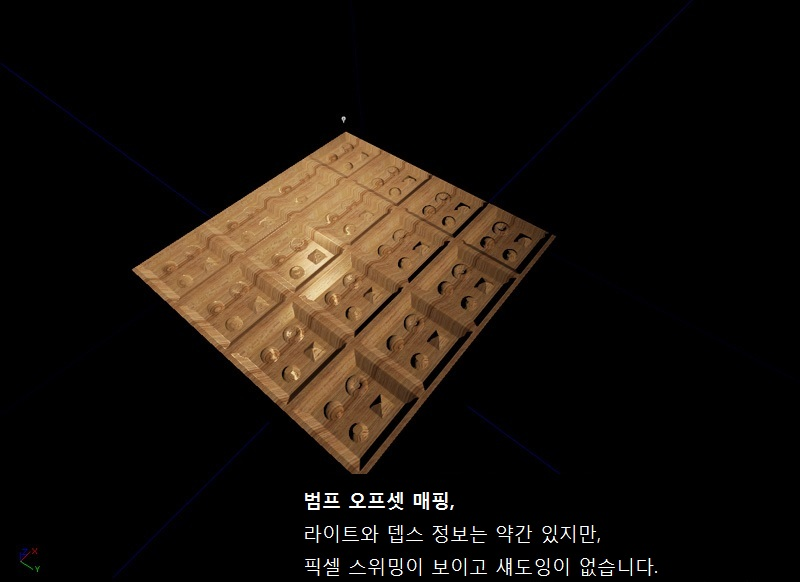
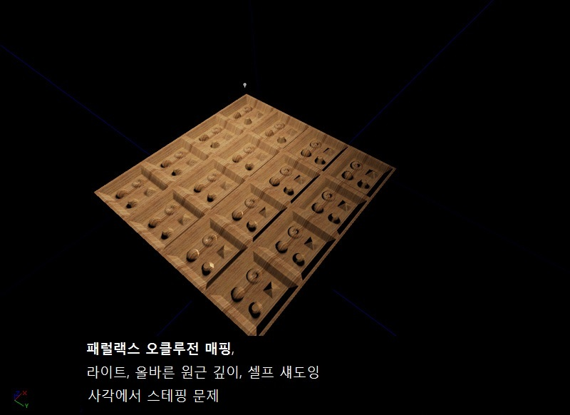

UDN
Search public documentation:
DevelopmentKitGemsParallaxOccludedMappingKR
English Translation
日本語訳
中国翻译
Interested in the Unreal Engine?
Visit the Unreal Technology site.
Looking for jobs and company info?
Check out the Epic games site.
Questions about support via UDN?
Contact the UDN Staff
日本語訳
中国翻译
Interested in the Unreal Engine?
Visit the Unreal Technology site.
Looking for jobs and company info?
Check out the Epic games site.
Questions about support via UDN?
Contact the UDN Staff
UE3 홈 > UDK 젬 > 패럴랙스 오클루디드 매핑 (Parallax Occluded Mapping)
UE3 홈 > 머티리얼과 텍스처 > 패럴랙스 오클루디드 매핑 (Parallax Occluded Mapping)
UE3 홈 > 머티리얼과 텍스처 > 패럴랙스 오클루디드 매핑 (Parallax Occluded Mapping)
패럴랙스 오클루디드 매핑 (Parallax Occluded Mapping)
문서 변경내역: James Tan 작성. 홍성진 번역.
UDK 2011년 3월 버전으로 최종 테스팅
개요
패럴랙스 오클루디드(시차에 가려지는) 매핑이란, 레이 트레이싱에서의 개념을 사용하여 가상으로 변위(displace, 노멀 방향으로 돌출)된 텍스처를 만들어내기 위한 렌더링 기법입니다. 이 방법을 사용하면 돌 벽과 같은 텍스처에 (실제로는 평평하지만) 입체감을 불어넣어 줄 수 있습니다. 이 기술 자체에 대한 정보는 웹에 널려 있으니, 여기서는 이론적인 것을 자세히 다루지는 않겠습니다.
여러가지 가상 입체법 비교
노멀 매핑
노멀(법선) 매핑은 라이팅에서 얻을 수 있는 깊이감을 내기 위한 표준 방식입니다. 우리 눈은 자연적으로 빛과 그림자로 입체감을 인지합니다. 위가 밝고 아래가 어두운 부분은 화면 밖으로 튀어나와 보이고, 그 반대면 화면 안으로 들어가 보입니다. 노멀 맵은 텍스처 좌표를 어떤 식으로든 실제로 변경하는 것은 아니므로, 자세히 들여다 보면 평평하다는 것을 알 수 있습니다. 현재 노멀 맵은 비용이 매우 싸기에, 퍼포먼스에 별다른 악영향을 끼치지 않습니다.
범프 오프셋 매핑
범프 오프셋(또는 패럴랙스(시차)) 매핑은 카메라가 보는 방향에 따라 텍스처 좌표를 변경하여 깊이감을 더하는 방식입니다. 디퓨즈, 노멀, 스페큘러의 UV 맵들을 변위시켜 인공적인 깊이감을 냅니다. 범프 오프셋에는 약간의 인스트럭션만 추가되므로, 보통 비용이 매우 쌉니다.
범프 오프셋 매핑의 큰 문제점은 높이차가 많이 나는 오프셋에서 보통 시각적으로 옳지 않은 픽셀 스위밍 현상이 발생한다는 점입니다.
패럴랙스 오클루전 매핑
패럴랙스 오클루전(시차 가려짐) 매핑은 카메라가 보는 방향에 따라 올바른 텍스처 좌표를 알아내고자 레이 트레이싱으로 깊이감을 추가하는 방법입니다. 머티리얼에 원근법상 제대로 맞는 깊이감을 냅니다. 가려지는 부분이란 입체감을 더하고자 다른 부분을 가리기까지도 하는 하이트맵 부분을 말합니다. 마지막으로 셀프 섀도잉을 통해서도 머티리얼에 좀 더 인공적인 입체감을 더합니다. 그러나 패럴랙스 오클루전 매핑은 매우 비싸서 아무데나 사용하는 것은 좋지 않습니다.
패럴랙스 오클루전 매핑의 큰 문제점은 사각(oblique angle, 거의 눕혀 본 각도)에서는 레이 트레이싱으로 올바른 하이트맵을 구하기에 충분한 정확도가 나오지 않는다는 점입니다. 아래 그림에서 보시듯이 사각에서는 깊이가 빠져 있거나 잘못되기 쉽상입니다. 높이 스케일이 너무 큰 경우에도 똑같은 문제가 날 수 있습니다. 이 스크린샷은 사각에서 본 패럴랙스 오클루전 머티리얼입니다. 계단형 '팬케이크' 현상이 보입니다.
이 스크린샷은 사각에서 본 패럴랙스 오클루전 머티리얼입니다. 계단형 '팬케이크' 현상이 보입니다.

머티리얼 구성
머티리얼의 크기를 감안하여, 각 부분을 개별적으로 살펴봅시다.
패럴랙스 오프셋 계산하기 (Parallax Offset)
패럴랙스 오프셋은 적절한 깊이를 알아내기 위해 하이트맵을 스텝-쓰루하(한 단계씩 올려가며 살펴보)는 데 사용되는 벡터입니다. 이는 (이미 탄젠트 공간에 있는) 카메라 벡터의 제곱 길이를 찾는 식으로 계산됩니다. 그런 다음 거기에서 카메라 벡터의 z 제곱값을 빼 줍니다. 여기에 제곱근을 구한 다음 카메라 벡터의 z 값으로 나눠 줍니다. 또 여기에 카메라 벡터의 x y 값을 각각 곱해 x y 두 부분으로 된 벡터를 만들어 냅니다. 마지막으로 여기에 높이 스케일을 곱해 x y 컴포넌트만 반환합니다.
뎁스 패스 유닛 (Depth Search)
각 뎁스 패스 유닛은 패럴렉스 오프셋을 미리결정된 스텝 사이즈로 변경해 줍니다. 머티리얼에는 디폴트로 최대 9 까지의 뎁스 패스가 있으니, 스텝 사이즈는 (1/ (1+ 뎁스 패스) = ) 0.1f 입니다. 거기서 뎁스를 계산한 다음 하이트맵에서 구한 높이와 비교합니다. 높이가 계산된 깊이보다 크면, 시차 적용된 텍스처 좌표가 전달됩니다. 그렇지 않으면, 다음 뎁스 패스에 들어갑니다. 각 뎁스 패스마다 스텝 크기를 하나씩 늘려가면서 하이트맵 속으로 점점 더 깊이 투영합니다. 깊이 검색 품질을 높이기 위해 뎁스 패스의 수를 늘릴 수는 있지만, 머티리얼의 퍼포먼스와 인스트럭션 수가 제한됩니다. 모든 뎁스 패스 끝에서 시차가 적용된 텍스처 좌표가 반환됩니다.
디퓨즈 계산하기 (Diffuse)
디퓨즈는 디퓨즈 텍스처 파라미터에서 샘플을 뽑아 계산합니다.
이미시브 계산하기 (Emissive)
이미시브는 이미시브 텍스처 파라미터에서 샘플을 뽑은 다음 벡터 파라미터를 곱해서 계산합니다. 이런 식으로 이미시브의 색은 물론 밝기까지도 트윅 가능합니다.
스페큘러 계산하기 (Specular)
스페큘러는 두 가지 방법으로 계산되며, 스태틱 스위치 상의 값을 설정하는 데 사용할 방법을 결정할 수 있습니다.- 디퓨즈와 벡터 파라미터를 곱하는 방식은, 사용가능한 스페큘러 텍스처가 없을 경우에 좋습니다.
- 스페큘러 텍스처 샘플과 벡터 파라미터를 곱하는 방식은, 스페큘러를 좀 더 구체화시키고자 할 때 좋습니다.

스페큘러 파워 계산하기 (Specular Power)
스페큘러 파워는 두 가지 방법으로 계산되며, 스태틱 스위치 상의 값을 설정하는 데 사용할 방법을 결정할 수 있습니다.- 스페큘러 파워 텍스처 샘플과 벡터 파라미터를 곱하는 식으로 계산됩니다.
- 벡터 파라미터를 반환합니다.

노멀 계산하기 (Normal)
노멀은 디테일 노멀이 있든 없든 계산 가능하며, 디테일 노멀을 적용시킬 필요가 있는지 또는 하고싶은지를 결정할 수 있습니다. 디테일 노멀의 스케일과 뎁스를 변경할 수도 있습니다. 노멀 정보는 리플렉션 벡터에 필요하므로, 이 노멀의 결과가 머티리얼에 대한 Normal 입력에 연결됩니다.
그림자 계산하기
그림자는 초기 뎁스 패스에서 찾아낸 뎁스에서 시작하는 레이 트레이스를 역순으로 하여 계산합니다. 레이를 윗방향으로 증가시키면서 각 트레이스 세그먼트에서 그림자 값을 계산하고 하이트맵 샘플을 뽑습니다. 그림자 세그먼트 전부를 계산한 다음 최종 값을 계산합니다.
디퓨즈와 스페큘러 더하기
그림자가 수동으로 계산되기에, 머티리얼에는 언리얼의 디폴트 계산이 아닌 자체 커스텀 라이팅 솔루션을 사용해야 합니다. 디폴트로 머티리얼은 게임 내 다른 머티리얼과 비슷해 보일 수 있도록 퐁 셰이딩을 사용합니다. 이 작업은 디퓨즈 컴포넌트를 먼저, 그리고서 스페큘러 컴포넌트를 계산한 다음 그 결과를 더합니다.
그림자 계수 곱하기
디퓨즈와 스페큘러를 더한 다음, 결과 픽셀에 그림자 계수(coefficient)를 곱하여 어둡게 만듭니다. 상수 클램프를 조절하여 그림자를 얼마나 어둡게 할지, 배경(ambient) 밝기는 얼마나 밝게 할 지를 정의할 수 있습니다. 여기에는 섀도잉 메서드를 끄거나 켜는 데 사용할 수 있는 스태틱 스위치도 있습니다.
이미시브 추가하기
이미시브는 어느 라이팅 계산의 영향도 받지 않으므로, 제일 마지막에 추가됩니다.
최종 머티리얼 트리 노드
전체 머티리얼 트리 노드 이미지는 이와 같습니다. 클릭하시면 크게 보실 수 있습니다. (약 2.5 MB)

공지
머티리얼 크기때문에 머티리얼 인스턴스를 만드는 데 시간이 조금 걸릴 수 있다는 점 유의하시기 바랍니다.
실루엣 클리핑 속에 실험
시차 적용된 텍스처 좌표가 1.f 초과이거나 0.f 미만인 경우를 감지해낼 수도 있습니다. 그런 경우 불투명도를 0 으로 설정해 주면 일종의 실루엣 클리핑(역주: 에지를 다듬어서 실제로 깊이가 있는 것처럼 보이게 만드는) 효과를 낼 수는 있지만, 완벽하지는 않습니다.

예제


내려받기
- 콘텐츠와 머티리얼 ParallaxOcclusionMapping.zip 내려받기